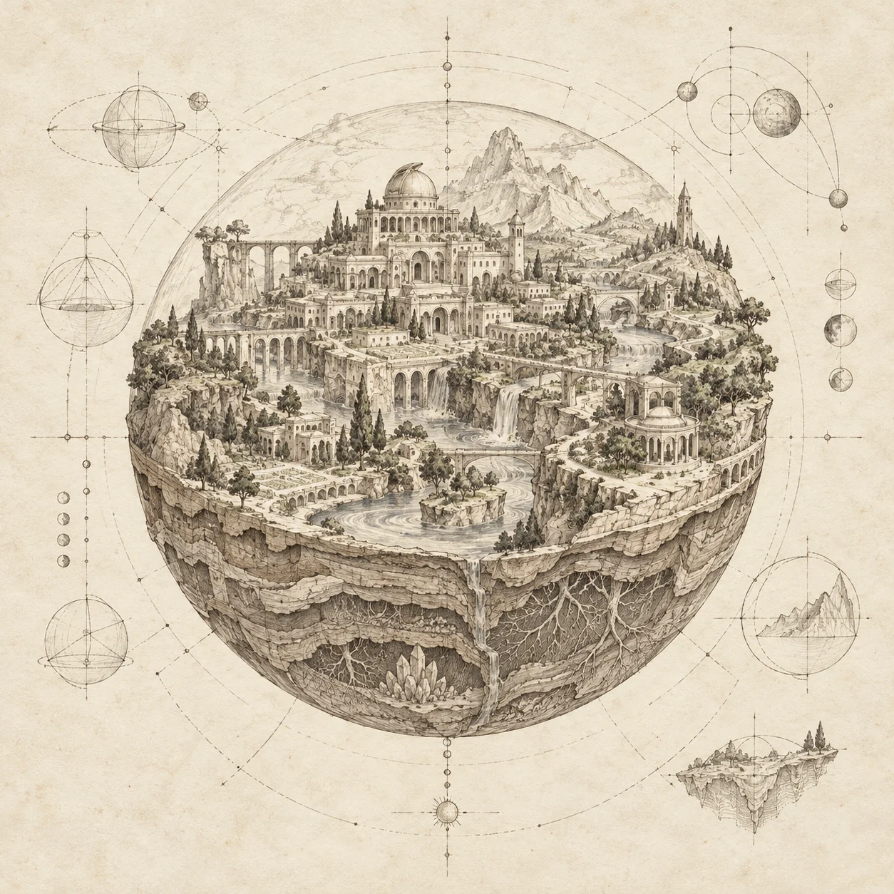

Study / 01
Systems × Civilisation
A city that lives
with the tides.
How would architecture, culture and daily life change if the streets belonged to the sea twice a day?
Open the studio brief DreamUniversity
Explore the programme
DreamUniversity
Explore the programme
A higher education in imagination
Imagine their possibilities. Understand their systems. Give them life.
Take the foundations of Dream Unity into the study of mind, nature, civilisation and immersive worlds — and learn to bring them together in a universe of your own.
Dream University Founding curriculum in development

01 / Schools of study
Four proposed schools, one connected education. Study the creator, the systems, the societies and the spaces that make a world.
Consciousness, memory, emotion and the inner architecture of experience.
Relational reasoning, mathematics, ecology and the laws that make worlds coherent.
Culture, language, history and the values that shape how people live together.
Architecture, simulation and the craft of creating places others can inhabit.
02 / The founding programme
An interdisciplinary course of study, from the depth of an inner image to the complexity of a shared universe.
The proposed curriculumSelect a field to explore
Develop the ability to enter, sustain and transform an imagined world. Bring attention, sensory detail, memory and emotional meaning into a deliberate creative practice.
Imagery & embodiment · Method of loci · Meaning & emotion
Studio outcome An experiential atlas: places, sensations and meanings that form the inner life of your world.
Builds on Dream Machine, Dream Maker, Dream World and the practices of Project : Meaning.
Understand how the universe around you works, then examine the assumptions behind the worlds you imagine. Trace how a change in one relationship transforms a whole system.
Relational reasoning · Mathematical models · Causality & ecology
Studio outcome A world model: its rules, resources, relationships and the consequences of changing them.
Create people and cultures that belong to their environment. Explore how histories, beliefs, languages and institutions develop together, and whose lives your design makes possible.
Narrative design · Social systems · Ethics & interdependence
Studio outcome A civilisation dossier: a living history, cultural practices and the tensions that move a society.
Translate your world into something another person can encounter. Move between maps, models, interactive spaces and virtual environments, testing how form changes experience.
Spatial design · Interactive prototypes · Virtual reality & presence
Studio outcome An explorable prototype, with a design journal explaining the decisions that shaped it.
Unite experience, systems, culture and space in an original world. Invite critique, examine the effects of your decisions, and develop the work through successive revisions.
Independent inquiry · Collaborative critique · Portfolio & reflection
Studio outcome A world portfolio ready to carry into the shared exploration envisioned for Dream Universe.
This is the founding curriculum outline. Programme structure, entry requirements and any formal qualifications are still being developed.
03 / Learning through making
A question becomes a sketch. A sketch becomes a system. A system becomes a place someone can enter.
A glimpse of the work this education is designed to make possible.
Systems × Civilisation
How would architecture, culture and daily life change if the streets belonged to the sea twice a day?
Open the studio briefImagination × Ecology
Invent a form of ecological memory. Then trace its consequences through an entire living system.
Open the studio briefMeaning × Virtual Worlds
Design a virtual place where people explore memories together, with care for consent and perspective.
Open the studio briefThe challenge
Begin with a settlement whose lowest streets flood predictably. Investigate a real tidal environment, then define which conditions your imagined city shares and which it changes. Consider water, food, access, trade and the people most affected.
Critique question: When the water rises, who gains access — and who loses it?
Explore relations & systemsThe challenge
Invent one explicit mechanism through which a forest retains traces of its inhabitants. Distinguish this speculative rule from established biology. Explore its costs, limits and effects across generations.
Critique question: What happens when remembering helps one species and harms another?
Explore imagination & inner worldsThe challenge
Design a virtual observatory in which visitors can choose to share an imagined representation of a memory. Work with invented material. Consider how different people interpret the same space, and how they enter, leave and control what is shared.
Critique question: How can a place support connection while preserving the meaning of a personal experience?
Explore space & immersion04 / Research & inquiry
A world creator learns from the world that already exists. The proposed research programme connects lived experience, rigorous models and the consequences of creation.
Bring an inquiry into your worldHow does a richly imagined place become a sustained experience? Examine the relationships between imagery, attention, memory and meaning.
Possible inquiry: compare descriptions and reflective journals across different imaginative practices.
How do simple relationships produce complex worlds? Investigate feedback, interdependence and unintended consequences in natural and invented systems.
Possible inquiry: build a small model, vary one assumption and trace the consequences.
What makes an immersive world meaningful, accessible and worth inhabiting together? Explore how design distributes agency and shapes relationships.
Possible inquiry: compare alternative designs through a voluntary, consent-based critique.
Founding research directions, open to development through study and practice.
05 / Your place in the journey
Dream University is the next stage after Dream Unity: a place to deepen the foundations and turn them into original, interconnected creation.
Preparing for study
Your preparation begins with the practices of Dream Unity. Develop attention, imagination, emotional awareness and relational thinking; keep a record of the worlds and ideas you create.
Begin with Dream UnityA developing ability to sustain an imagined experience, explain connections between ideas, reflect on your practice and revise a creation in response to questions. These are guiding aims; formal entry criteria are still being designed.
Enrolment is not yet open. This site presents the founding academic design. Dates, delivery arrangements, fees and any qualification details will be published when established.
Toward Dream Universe: the vision for exploring extraordinary virtual worlds together. The university prepares the creator; the universe opens the possibility of a shared experience.
Discover Dream UniverseThe next chapter of becoming